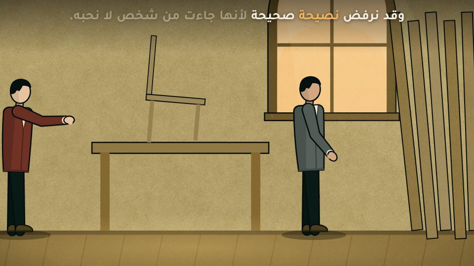
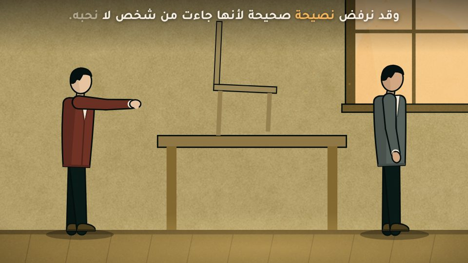
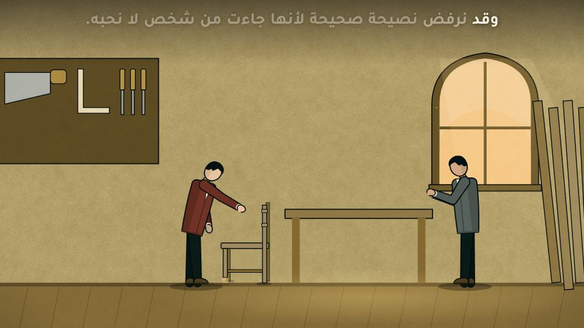
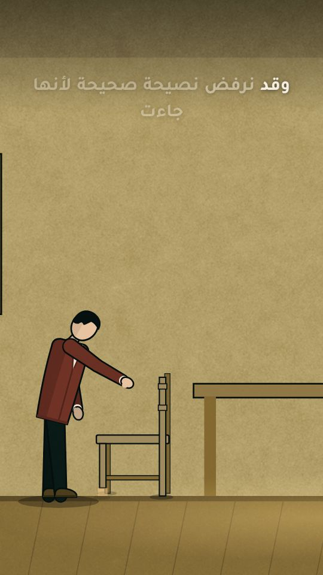
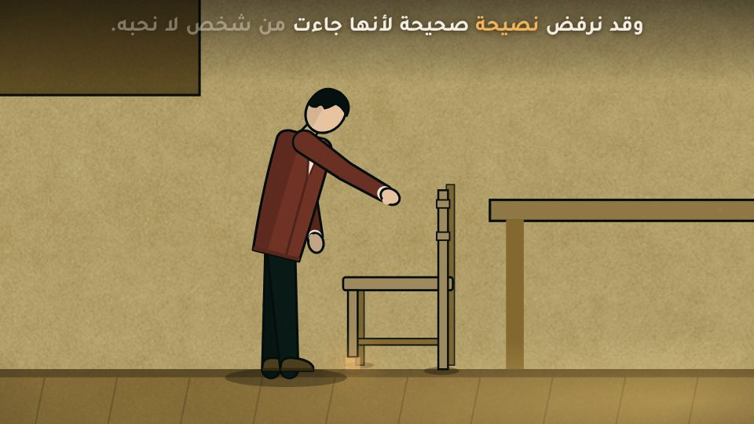
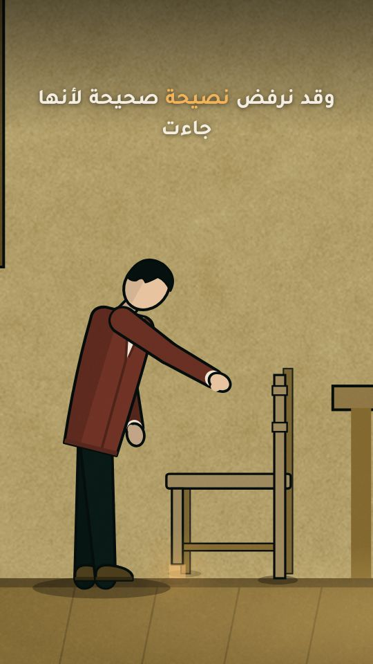
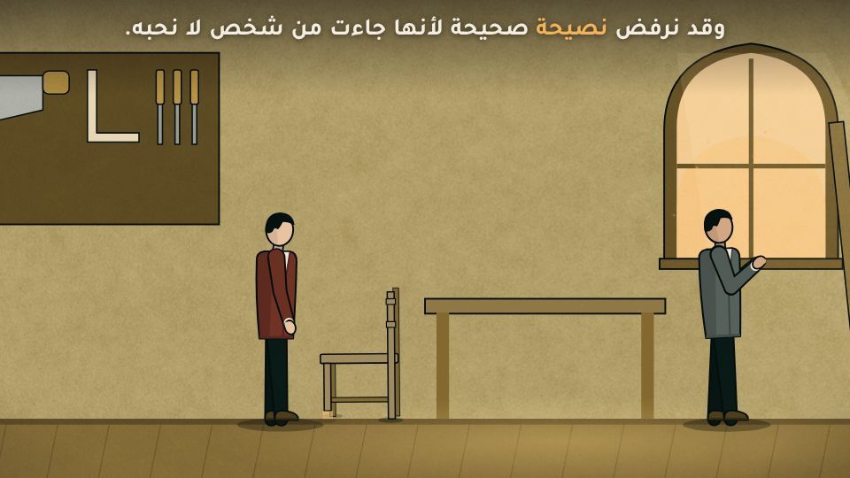
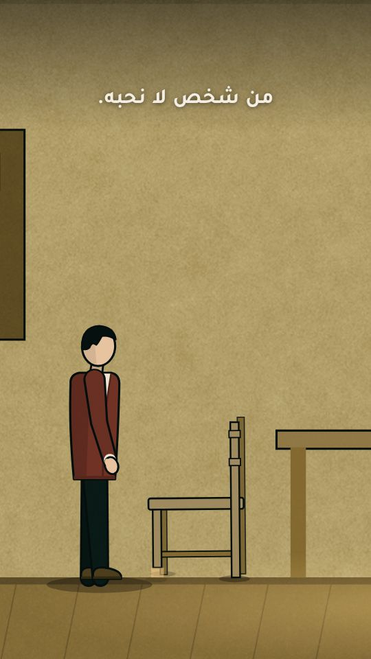

قبل · v2




«وقد نرفض نصيحة صحيحة لأنها جاءت من شخص لا نحبه.» قبل (v2): كرسي فوق المنضدة بأرجل رفيعة على خط سطحها، يُقرأ معلّقًا في العمودي، والزميل يشير أفقيًا إلى الفراغ. بعد: كرسي جديد بمقاس الإنسان على أرض الورشة أمام الزميل وبعيدًا عن المنضدة؛ ثلاث أرجل على الأرض بظلال تماسّها (البعيدتان أخفّ للعمق)، والأمامية القريبة أقصر بفراغ مضاء تحتها؛ الزميل ينحني ويشير إليها، وعند «صحيحة» لقطة قريبة على الاثنين والكرسي يتأرجح فتهبط الساق وترتفع ثم يسكن معلّقًا.







